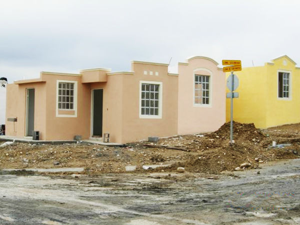

La violencia intrafamiliar se ha convertido desde hace años en un problema a nivel mundial y México no es la excepción, de hecho se le considera un problema de salud pública. Buscar erradicar este tipo de violencia ha llevado a investigadores e instituciones de todo el mundo a establecer primero, una definición y después encontrar los factores que la originan.
La mayoría de las definiciones o nociones sobre violencia intrafamiliar coinciden en lo siguiente:
Como violencia intrafamiliar se denomina el tipo de violencia que ocurre entre miembros de una familia, y que puede tener lugar en el entorno doméstico o fuera de él.
En este sentido, la violencia intrafamiliar se registra cuando se producen situaciones de abuso o maltrato entre personas emparentadas, bien por consanguinidad, bien por afinidad.
Como tal, podemos decir que se ha producido un episodio de violencia doméstica cuando se han ocasionado daños a la integridad emocional, psicológica o física de una persona.
Los tipos de violencia más comunes que tienen lugar en una familia son los de padres a hijos y los de maridos a mujeres, aunque también pueden ocurrir de forma inversa, o involucrar a otros parientes, como tíos, primos o abuelos.
Las causas que motivan la violencia intrafamiliar son variadas, aunque por lo general se produce como forma de imponer el poder, la autoridad o el control a un miembro de la familia.
En las situaciones de violencia siempre existen dos roles: el del agresor y el del agredido. El agresor es la persona que impone su autoridad, fuerza física o poder para maltratar a otro miembro de la familia. Suele reconocerse en la personalidad del agresor un pasado de violencia intrafamiliar que este repite cuando forma su propia familia.
En este sentido, existen tres tipos básicos de violencia intrafamiliar:
- La psicológica, que es aquella que comprende episodios de maltrato verbal, humillaciones, intimidación, amenazas y desprecio. Sus consecuencias son daños psicológicos y emocionales, como la depresión, la ansiedad o el aislamiento social.
- La violencia física, que es aquella que involucra el uso de la fuerza, y puede derivar en golpes, heridas, hematomas, quemaduras o fracturas. Dependiendo de la gravedad, las lesiones causadas por la violencia física pueden requerir atención médica.
- La violencia sexual, que es el tipo de violencia que puede derivar en situaciones de abuso sexual, lo cual supone que una persona sea forzada a mantener cualquier tipo de contacto o relación sexual. Es un tipo de agresión gravísima, que compromete la estabilidad emocional de quien la sufre.
Diferentes estudios de organizaciones nacionales e internacionales coinciden en determinar que este tipo de conductas está directamente relacionado en múltiples ocasiones con el uso y abuso del alcohol y las drogas; y un elemento más lo constituye el pasado violento de los agresores quienes reproducen esas prácticas violentas a las que fueron sometidos durante su infancia.
Junto a estas explicaciones se encuentran otras que tal vez no han sido lo suficientemente analizadas pero no por eso dejan de tener una gran importancia, nos referimos específicamente a las características del espacio en el que cientos de familias tienen que vivir.
La estrechez de los espacios y la falta de privacidad de alguna manera genera tensiones e irritabilidad, inclusive una especie de sensación de claustrofobia, en este sentido el tamaño de la vivienda si cuenta, es decir, en la medida en que los espacios no sean lo suficientemente amplios, en esa medida se genera una alta probabilidad de que la violencia aparezca.
Esta violencia puede ser desde luego física, pero en primera instancia se manifiesta de manera verbal (gritos, amenazas, etc) si a esta circunstancia de estreches de la vivienda se suman el tipo de material con que se construyeron y la deficiencia de las instalaciones eléctricas por el uso de materiales de mala calidad, entre otras cosas, lo que resulta es un mal funcionamiento generalizado de la vivienda, en este sentido las condiciones están dadas para que se manifieste algún tipo de violencia.
De acuerdo con el Dr. Guillermo Boils Morales Investigador titular de la UNAM. La mitad del parque habitacional del país, conformado por 35 millones de casas, requiere de acciones de recuperación o reemplazo, y sólo 18 millones de estos conjuntos habitacionales están habitados. Una vivienda de calidad no corresponde con su objetivo: permitir el desarrollo y bienestar de las personas, lo cual incide en la calidad de vida, “el concepto de intimidad es incuestionable”.
El investigador menciona también que deben considerarse no sólo los metros cuadrados, sino los metros cúbicos, pues este tipo de vivienda en zonas cálidas disminuye aún más la calidad de vida, además de los espacios reducidos, no existen formas naturales de ventilación: las familias, ya de por si con recursos limitados, se ven en la necesidad de hacer mayores gastos en energía eléctrica para renovar el aire en este tipo de habitaciones.
Los materiales con los que se construyen masivamente las viviendas de los conjuntos habitacionales también son un factor que incide en la calidad de vida, además de que los materiales son de poca resistencia, el concepto de intimidad es cuestionable, pues los reducidos espacios y los materiales empleados no favorecen la privacidad ni el aislamiento del sonido, elementos necesarios para la calidad de vida y privilegios que debería ofrecer un hogar.

Para la Dra. Gabriela Ponce, Investigadora del Centro de Estudios Sociales y de Opinión Pública, (CESOP) al menos el 70 por ciento de la población que abandona su vivienda lo hace motivada por la mala calidad y la mala ubicación, quienes abandonan su hogar por estos motivos suelen reubicarse en las ciudades en donde estén más cerca de sus centros de trabajo y de educación.
Por último La Dra. Ponce considera que la violencia intrafamiliar, el mayor rezago en la familia y la reproducción de la pobreza son las consecuencias directas de habitar en una vivienda redonda (espacios en los que no existe división entre cocina, comedor, sala y recámaras).
Como se puede observar existen muchos otros elementos que no han sido tomados en cuenta lo suficiente para el análisis de los factores que determinan la violencia intrafamiliar, valdría la pena investigar el peso que estos tienen en el origen y desarrollo de este grave problema en la zona metropolitana de la laguna.